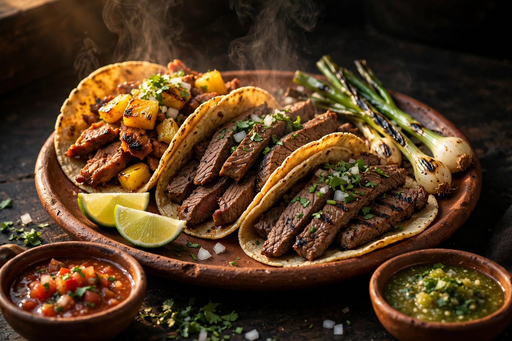

Pastor
Adobado tradicional con piña, cilantro y cebolla picada.
Precio: — (Pregunta en caja)
Tacos artesanales, gorditas y megaquesadillas en el corazón de Tuxtla. Salsas hechas a mano, todos los días de 8:30 a 18:00.

100% maíz & fogón chiapaneco Tuxtla Gtz.Nuestras especialidades al comal. Tortilla a mano, cilantro & cebolla, tradición.
Adobado tradicional con piña, cilantro y cebolla picada.
Carne suave asada al momento con sazón de casa.
Corte premium marinado al carbón y cebollitas.
La clásica combinación de carnes con su toque crujiente.
Con ingredientes orgánicos, recetas de casa y molcajete fresco todos los días.
Verde cruda de tomatillo, martajada cada mañana.
Roja tatemada de chile seco, con humo de leña.
Bodas, XV años, cumpleaños y reuniones en Tuxtla Gutiérrez.
10 Pte Esq 1A Sur,
Tuxtla Gutiérrez, Chiapas.
Lunes a domingo
de 8:30 a 18:00.
Llámanos directo a la cocina:
Te estamos esperando con la tortilla inflándose y el chile crujiendo.